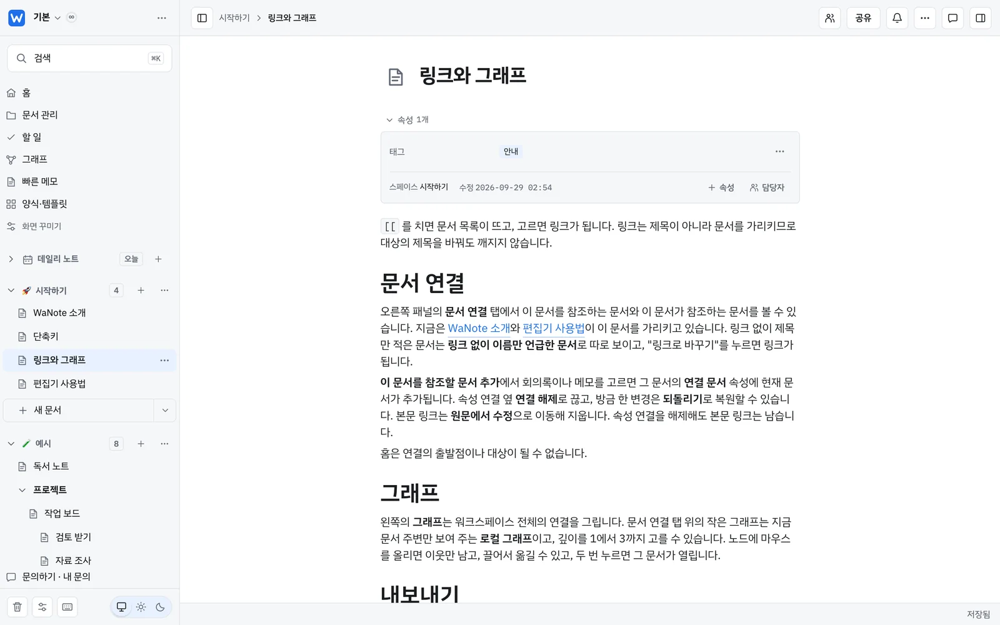
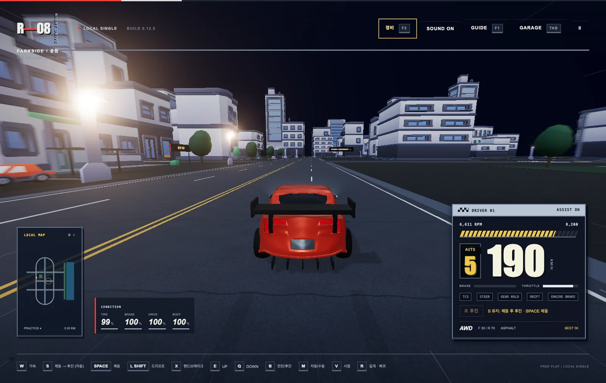
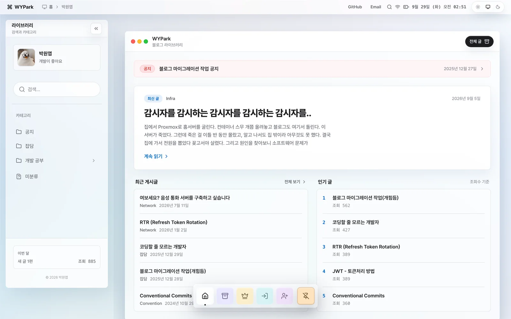

Park Won Yeop · 박원엽Backend Engineer — Seoul
직접 만들고,
직접 운영합니다.
Kotlin · Spring Boot 백엔드 엔지니어.
블로그부터 게임 서버까지, 만든 건 직접 띄우고 지킵니다.
blog.wypark.merace.wanote.netwanote.net
Kotlin · Spring Boot 백엔드 엔지니어.
블로그부터 게임 서버까지, 만든 건 직접 띄우고 지킵니다.
Kotlin · Spring Boot 백엔드 엔지니어.
블로그부터 게임 서버까지,
만든 건 직접 띄우고 지킵니다.
노션처럼 쓰고,
옵시디언처럼 잇는 문서 앱

강남 밤거리를 최대 10명이
함께 달리는 브라우저 레이싱

글부터 Maia 체스까지,
홈서버에서 직접 운영하는 블로그

노션처럼 쓰고,
옵시디언처럼 잇는 문서 앱
강남 밤거리를 최대 10명이
함께 달리는 브라우저 레이싱
글부터 Maia 체스까지,
홈서버에서 직접 운영하는 블로그